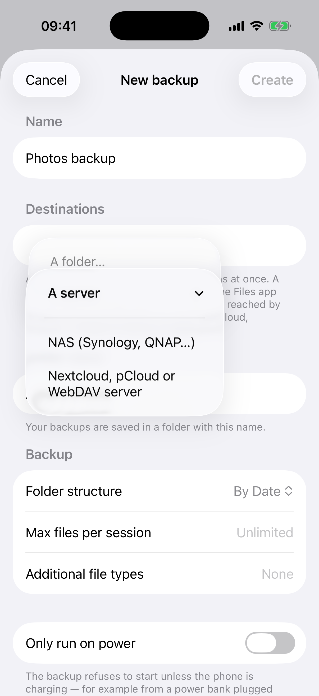
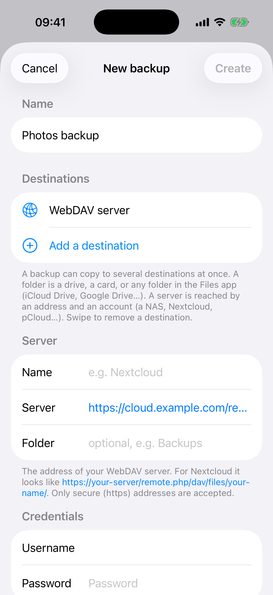
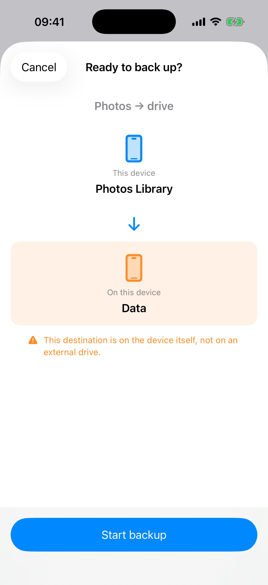

PhotoVideoBackup — Guía del usuario
Copia tus fotos y vídeos en un SSD externo, una tarjeta SD o un NAS — desde tu iPhone o tu móvil Android.
Guía de PhotoVideoBackup 2.8 — iPhone (iOS 16 o posterior) y Android (9 o posterior)
1 ¿Qué es PhotoVideoBackup?
PhotoVideoBackup copia tus fotos y vídeos desde el móvil — o desde una tarjeta de memoria de cámara — a un SSD portátil, una unidad USB o un NAS. Tus archivos nunca pasan por un servicio en línea: la aplicación no tiene servidor ni cuenta.
- El almacenamiento del móvil está lleno y quieres liberar espacio con seguridad.
- Vuelves de un viaje con una tarjeta SD llena de material (DJI, GoPro, Insta360, Blackmagic…) y quieres ponerlo a salvo de inmediato.
- Quieres una copia personal que no dependa de iCloud ni de Google Fotos.
¿Qué la hace fiable? Cada archivo copiado se vuelve a leer y se comprueba con una huella matemática (SHA-256). Si un solo byte es incorrecto, la aplicación te avisa: nunca tendrás una copia dañada sin saberlo.
La aplicación solo copia. Nunca mueve ni borra nada del origen, salvo que lo pidas expresamente después de una copia (véase «Historial e informes»).
2 Gratis y Pro
PhotoVideoBackup se descarga gratis. Una compra Pro — pago único, sin suscripción — desbloquea las funciones avanzadas:
| Función | Gratis | Pro |
|---|---|---|
| Copiar la biblioteca de fotos a una unidad o carpeta | ✓ | ✓ |
| Varias copias, cada una con sus unidades, NAS y ajustes | — | ✓ |
| Explorar y previsualizar las copias (con vista previa de LUT) | ✓ | ✓ |
| Copiar tarjetas de cámara y unidades USB (SD, DJI, GoPro, Insta360…) | — | ✓ |
| Réplica en una segunda unidad | — | ✓ |
| Copiar a un NAS por Wi-Fi | — | ✓ |
| Copiar a un servidor WebDAV (Nextcloud, pCloud…) | — | ✓ |
| Gradar vídeos LOG con una LUT (exportación H.265) | — | ✓ |


3 Lo que necesitas
| iPhone / iPad | Android | |
|---|---|---|
| El dispositivo | Un iPhone con puerto USB-C (iPhone 15 o posterior), iOS 16 o posterior | Un móvil o tableta Android, Android 9 o posterior |
| Una unidad | Cualquier SSD USB-C (Samsung T7, SanDisk Extreme, WD My Passport…) | Cualquier SSD o memoria USB-C, o una carpeta del móvil |
| Un hub o lector (opcional) | Un pequeño hub USB-C para conectar a la vez un SSD y un lector de tarjetas | Un lector de tarjetas USB-C o un hub OTG |
Copias largas, dos discos. El móvil tiene un solo puerto USB-C y los SSD alimentados por el bus toman la energía de él. Un hub USB-C con paso de carga (Power Delivery) permite conectar dos discos y una batería externa (o el cargador) a la vez: la batería alimenta el hub, el hub alimenta los SSD y carga el móvil, y la copia puede durar horas sin vaciar la batería.

4 Primer inicio y permisos
Una pantalla de bienvenida presenta la aplicación y cinco montajes típicos — desde el sencillo móvil → SSD hasta un NAS al que se llega por VPN. Toca Comenzar.

- iPhone / iPad: permite el acceso completo a tu biblioteca de fotos. Sin él, la aplicación no puede leer tus fotos.
- Android: permite el acceso a tus fotos y vídeos. Permite también el acceso a la ubicación de tus fotos — sin ello, Android elimina los datos GPS de los archivos que entrega y la copia no sería el original. Permite las notificaciones para que te avisen al terminar una copia.
5 Define el nombre del dispositivo y el destino
- Abre la pestaña Ajustes. En la sección Dispositivo, escribe un nombre de carpeta — por ejemplo iPhone de Ana o Pixel 8. Será el nombre de la carpeta en la unidad, de modo que dos móviles que copian en la misma unidad quedan separados. Una copia no empieza hasta que haya un nombre.
- Conecta tu unidad.
- iPhone / iPad / Android: abre la pestaña Copias, toca Nueva copia (o +), elige Fototeca / Galería y toca Añadir un destino → Una carpeta…; elige el disco, o una carpeta en él, en el explorador de archivos. Ponle un nombre a la copia y toca Crear.
- El nombre del disco aparece en la tarjeta de la copia, con su espacio libre. Solo lo haces una vez: la app reconoce el disco la próxima vez.




6 Copia tus fotos y vídeos
Abre la pestaña Copias. Cada copia es una tarjeta con su nombre, de dónde copia y adónde, y el espacio libre de su disco. Pulsa Iniciar. Con Pro puedes crear varias copias — por ejemplo una a un disco y otra a un NAS — cada una con sus propios ajustes: pulsación larga en la tarjeta (iPhone) o su menú ⋮ (Android), y después Ajustes. Una pequeña insignia en el pictograma indica cómo viajan los datos: un cable para un disco local, Wi-Fi o datos móviles (SIM / eSIM) para un NAS o una carpeta en la nube, según la red en la que esté el teléfono. Un destino es una carpeta —un disco, una tarjeta o cualquier carpeta de la app Archivos, incluidos iCloud Drive y Google Drive— o un servidor al que se accede con una dirección y una cuenta (un NAS, Nextcloud, pCloud…). Una copia puede tener varios de cada tipo.
Antes de iniciar la copia, una pantalla ¿Listo para la copia? muestra lo que va a ocurrir: el origen y luego cada destino, con un pictograma según su tipo (disco, NAS, carpeta en la nube o el propio teléfono — en naranja, con una advertencia). Si la copia exige alimentación, indica también si el teléfono se está cargando. Compruébalo y pulsa Iniciar copia, o la cruz para cancelar.



La aplicación analiza la biblioteca y después copia. La primera copia es la más larga; las siguientes solo copian lo nuevo y son mucho más rápidas.
- Las fotos guardadas solo en iCloud / Google Fotos se descargan primero — hace falta conexión y algo de tiempo.
- La aplicación copia cada archivo directamente al destino, así que funciona incluso con el móvil casi lleno.
- Puedes salir de la aplicación: una notificación te avisa cuando termina la copia.
7 Copia una tarjeta de cámara (Pro)
- Conecta el lector de tarjetas al móvil e inserta la tarjeta (usa un hub si el SSD debe seguir conectado).
- iPhone / iPad / Android: en la pestaña Copias, toca + y elige Cámara o tarjeta SD, luego Añadir un origen… y elige la tarjeta en el explorador de archivos. Añade sus destinos con Añadir un destino: Una carpeta… para un disco, Un servidor para un NAS u otro servidor.
- Elige el destino y ponle un nombre — Blackmagic, Viaje a Japón… El tipo de dispositivo se reconoce solo.
- Pulsa Iniciar.
| Dispositivo reconocido | Qué se copia |
|---|---|
| DJI Mini 3 Pro | Fotos, vídeos, DNG y la telemetría (.srt) |
| DJI 360 / Action (Neo 2…) | Vídeos, fotos, DNG, audio y la telemetría (.srt) |
| Insta360 (X5…) | Archivos .insv, .insp y .lrv |
| GoPro HERO | Vídeos y fotos; se omiten los archivos proxy (.lrv) y de miniaturas (.thm) |
| Cualquier otro | Formatos habituales de foto, vídeo y RAW |
Para quitar un origen, elimina la copia que lo usa (la tarjeta también se olvida si ninguna otra copia la usa). No se borra ningún archivo.
8 Mientras se copia
Aparece un panel Copia en progreso en cuanto tocas Copia. Primero Preparando… (conexión con tus destinos) y luego Analizando el origen… con un contador en vivo de archivos encontrados — en una biblioteca grande puede tardar un poco, no está bloqueado.

| Fase | Qué hace la aplicación |
|---|---|
| Análisis | Cuenta los archivos y comprueba cuáles hay que copiar. |
| Copia | Escribe el archivo en el destino. |
| Verificación | Vuelve a leer la copia y la compara con el original. |
| Omitidos | El archivo ya está copiado — nada que hacer. |
Un botón Detener termina la copia limpiamente en cualquier momento. Ajustes → Copia también tiene un límite Máx. archivos por sesión: déjalo vacío para ilimitado.
9 Cuando termina la copia

| Cifra | Significado |
|---|---|
| Copiados | Archivos guardados por primera vez en el destino. |
| Omitidos | Archivos que ya estaban — normal y sin riesgo. |
| Fallidos | Archivos que no se pudieron copiar (raro). |
Un fallo proviene de una tarjeta dañada, una unidad llena, una conexión cortada o un único archivo demasiado grande para el espacio libre — solo ese archivo se señala y el resto continúa. Libera espacio o reconecta y vuelve a lanzar la copia: se recuperan los que faltan.
10 Historial e informes
La pestaña Historial lista cada copia: origen, destinos, estructura de carpetas, número de archivos y un color — verde si todo fue bien, naranja para Parcial, rojo si hubo fallos.

Parcial significa que la copia se detuvo antes de terminar, por una de cuatro razones que el informe indica: tocaste Detener, se alcanzó el límite de archivos, un destino se desconectó o el almacenamiento del iPhone se agotó (tus archivos están a salvo — libera espacio). Reconecta la unidad o libera espacio y vuelve a lanzar — continúa donde se quedó.
Toca una sesión para ver su informe: resumen, estado SHA-256 y listas de archivos copiados, omitidos y fallidos — con el motivo de cada fallo. Con dos destinos, el informe muestra cada unidad por separado.

Eliminar archivos fuente… libera espacio en la tarjeta o en la biblioteca cuando estás conforme con la copia. Solo ofrece los archivos copiados y verificados, y para confirmar debes escribir un código de cuatro cifras. Tu copia no se toca. En iPhone y Android, el sistema pide una confirmación más para las fotos.

11 Explora, mira y comparte tus copias
La pestaña Explorar muestra, dentro de la aplicación, lo que hay en tus unidades: una carpeta por dispositivo, luego tus carpetas por fecha y después una cuadrícula de miniaturas. Toca una foto para abrirla a pantalla completa — desliza para cambiar de archivo, pellizca para ampliar — o toca un vídeo para reproducirlo. La unidad debe estar conectada.


Para enviar archivos a otro sitio: toca Seleccionar, marca los archivos y luego Compartir — AirDrop, mensajes, correo, otra aplicación.

En un NAS, Explorar lista los archivos y descarga cada uno solo cuando lo abres. Un servidor WebDAV funciona igual.
12 Carpetas y nombres de archivo
En Ajustes → Copia, Estructura de carpetas define cómo se organiza una carpeta de dispositivo: Flat (plana), By month (por mes), By date (por fecha, predeterminada) o By year / month (año / mes). La pestaña Explorar se adapta a lo que haya en la unidad.
Nombre de archivos da a cada archivo su nombre definitivo en el momento de su primera copia — nunca se guarda con el nombre de la cámara para renombrarlo después. Activa Renombrar archivos durante la copia y edita el patrón: toca un símbolo para insertarlo, todo lo demás es texto literal. Una línea Ejemplo muestra el resultado.

| Símbolo | Se sustituye por |
|---|---|
| {YYYY} {MM} {DD} | Año, mes y día de la captura |
| {hh} {mm} {ss} | Hora, minuto y segundo de la captura (hora local) |
| {device} | El nombre de la carpeta del dispositivo, sin espacios |
| {original} | El nombre original del archivo, sin su extensión |
- Nunca se sobrescribe nada. Si el nombre lo usa un archivo distinto, el nuevo recibe un sufijo
-1,-2… Incluye los segundos en el patrón para que dos tomas simultáneas conserven nombres distintos. - Los duplicados se reconocen por ese nombre. Un archivo ya copiado se omite — aunque lo hayas retocado después — y un archivo distinto con el mismo nombre se mantiene aparte.
- Los archivos existentes no se renombran. El perfil se aplica a los archivos copiados a partir de ahora. Con el perfil desactivado (predeterminado) los archivos conservan el nombre de la cámara.
También puedes añadir extensiones de archivo adicionales para copiarlas junto a los medios — por ejemplo registros GPS gpx.
13 LUT Grade: dar su aspecto al material LOG (Pro)
El material grabado en LOG (DJI D-Log M, GoPro Protune…) se ve plano y gris hasta que se aplica una LUT. En Explorar, asigna una LUT a una carpeta de dispositivo para previsualizar y gradar sin salir de la aplicación.
- Abre una carpeta de dispositivo y, en LUT Grade, toca Asignar LUT… y luego Importar LUT (.cube)…. Sirve cualquier archivo
.cubeestándar (DaVinci Resolve, Final Cut Pro, el fabricante de tu cámara). - Toca cualquier vídeo de esa carpeta: se reproduce con la LUT aplicada en tiempo real. Esta vista previa es gratuita.
- Para crear copias permanentes (Pro), toca Seleccionar, elige los vídeos y luego Clasificar. Cada uno se recodifica en H.265 con la LUT incorporada, en una carpeta hermana llamada Dispositivo (Graded).


- El gradado se hace vídeo a vídeo, nunca «todo» — una carpeta suele mezclar clips LOG y normales, y una LUT LOG estropearía los normales.
- Los archivos ya gradados se omiten, así que puedes repetir sin riesgo. Cancela cuando quieras: los terminados se conservan.
- El gradado es exigente: mantén la aplicación abierta y la unidad conectada. El móvil puede calentarse.
- En un NAS, los clips se descargan, se gradan en el móvil y se suben a una carpeta Dispositivo (Graded) del NAS — más lento y consume datos.
14 Dos destinos a la vez (Pro)
Añade un segundo destino — pulsación larga en la tarjeta de la copia (iPhone) o su menú ⋮ (Android), y después Ajustes y Añadir un destino. Cada archivo se copia a ambos a la vez — dos discos, o un disco y un NAS. La copia no dura el doble. Si un destino falla o desaparece, el otro continúa, y el informe indica a cuál le falta qué.
15 Copia a un NAS por Wi-Fi (Pro)
En lugar de una unidad — o además de ella — puedes copiar directamente a un NAS (Synology, QNAP, TrueNAS, cualquier equipo que hable SMB) por la red. Sin cable, sin nube, y cada archivo se verifica con SHA-256.
- En el NAS, activa el uso compartido de archivos SMB y da a un usuario acceso de lectura y escritura a una carpeta compartida.
- En la app — iPhone / iPad / Android: crea una copia y después Añadir un destino → Un servidor → NAS (Synology, QNAP…), o añade el NAS a una copia existente desde sus Ajustes.
- Rellena el host (p. ej.
192.168.1.20), el recurso compartido (p. ej.photo), una carpeta opcional, y tu usuario y contraseña. La contraseña se guarda en el llavero de iOS o en el Keystore de Android. - Pulsa Probar conexión: «Conectado — N elemento(s) encontrado(s).» Después Crear (o Guardar en los ajustes de una copia).
El NAS aparece ahora en la tarjeta de la copia, con su espacio libre. Cada copia tiene su propio NAS, así que puedes usar varios. Puedes copiar fuera de casa si el NAS es accesible — la forma segura más sencilla es una VPN como Tailscale: instálala en el NAS y en el teléfono y usa la dirección 100.x.x.x del NAS como host.
16 Copiar a Nextcloud, pCloud u otro servidor WebDAV (Pro)
Además de un disco o un NAS, una copia puede ir a un servidor WebDAV: Nextcloud, ownCloud, pCloud, un Synology o QNAP con WebDAV activado, una Hetzner Storage Box… La dirección es una dirección segura https, así que funciona desde cualquier lugar, sin VPN. Cada archivo se verifica con SHA-256, como en un NAS.
- Consigue la dirección WebDAV de tu servidor. Nextcloud:
https://tu-servidor/remote.php/dav/files/tu-nombre/. pCloud:https://ewebdav.pcloud.com/(cuenta en Europa) ohttps://webdav.pcloud.com/(Estados Unidos). - Con la autenticación en dos pasos, crea una contraseña de aplicación en los ajustes de seguridad de tu servidor y úsala en lugar de tu contraseña.
- En la app: crea una copia y después Añadir un destino → Un servidor → Nextcloud, pCloud o servidor WebDAV, o añádelo a una copia existente desde sus Ajustes.
- Rellena la dirección del servidor, una carpeta opcional (por ejemplo
Backups), tu nombre de usuario y tu contraseña. La contraseña se guarda en el llavero de iOS o el Android Keystore. - Toca Probar conexión. Después Crear (o Guardar en los ajustes de una copia).
Tu propio servidor con un certificado autofirmado. Si iOS no confía en el certificado del servidor, la prueba lo indica y muestra su huella. Comprueba que es la que muestra tu servidor y toca Confiar en este certificado: a partir de entonces solo se acepta exactamente ese certificado (otro distinto se rechaza). Olvidar este certificado lo elimina.
Archivos grandes. En Nextcloud y ownCloud, los vídeos de más de 100 MB se envían por partes, y una subida interrumpida se reanuda donde se quedó. Los demás servidores reciben cada archivo en una sola petición: si un servidor o un proxy situado delante limita el tamaño de una subida, el archivo se marca como fallido con «El servidor rechazó el tamaño de este archivo: revisa su límite de subida.» Sube el límite en el servidor y vuelve a ejecutar. El propio pCloud dice que WebDAV no está pensado para copias muy grandes: para vídeos grandes, prefiere un disco o un NAS.
17 Android e iPhone: en qué se diferencian
Las dos aplicaciones comparten el mismo motor: misma detección de duplicados, mismo nombrado, misma verificación SHA-256, mismo índice — una copia empezada en una es reconocida por la otra.
| iPhone / iPad | Android | |
|---|---|---|
| Fuente de biblioteca | Biblioteca de Fotos | Galería (fotos y vídeos) |
| Destino | Carpeta elegida en Archivos (SSD, iCloud Drive, SMB) | Carpeta elegida con el selector del sistema (SSD, USB, almacenamiento del móvil), NAS |
| Segundo plano | Unos 30 segundos; después la pantalla se mantiene encendida durante la copia | Una notificación en primer plano lo mantiene en marcha, con botón Detener |
| Pro | Compra dentro de la app (App Store) | Compra única (Google Play) |
| Mac | Funciona en Mac con chip Apple («diseñada para iPad») | — |
.nomedia) para que la copia no se vuelva a copiar.

18 Preguntas frecuentes
¿Copiará dos veces el mismo archivo si vuelvo a lanzarla? No. Cada archivo recibe un nombre en el destino y la siguiente copia lo busca con ese nombre. Si los registros de la aplicación indican que viene del mismo original, se omite — aunque lo hayas retocado después. Solo los archivos realmente distintos con el mismo nombre reciben un sufijo -1, -2…, y nunca se sobrescribe nada.
¿Dónde recuerda la aplicación lo que ha copiado? En su propia base de datos y en un pequeño archivo oculto, .pvb-index.json, en la raíz de cada destino. Esa copia viaja con la copia de seguridad: tras reinstalar, o desde otro móvil, la aplicación la lee y no vuelve a copiar. Puedes dejarla en paz; si la borras, la aplicación la reconstruye.
¿Puedo copiar a un NAS y a una unidad a la vez? Sí — cada destino conectado recibe la copia al mismo tiempo.
La conexión con mi NAS agota el tiempo de espera. Normalmente el NAS no es accesible: comprueba que estás en la misma Wi-Fi (o que la VPN está activa), que el recurso compartido SMB está habilitado y que el cortafuegos del NAS permite la conexión.
¿Puedo usar dos móviles con la misma unidad? Sí. Da a cada uno un nombre de carpeta distinto en Ajustes; cada uno crea su propia carpeta en la unidad.
La barra marca 3 % y parece atascada. Los primeros archivos suelen ser vídeos grandes. Espera unos minutos.
Mi tarjeta aparece como «Documents». Algunas cámaras usan una carpeta genérica. Escribe un nombre descriptivo al añadir la fuente.
¿Puedo copiar con el móvil casi lleno? Sí. Los archivos se envían en flujo al destino, así que solo se retienen unos pocos megabytes a la vez. Solo una copia a un NAS solo necesita espacio para un archivo cada vez. Un archivo que de verdad no cabe se señala como fallido y el resto continúa.
¿Se envían mis datos a alguna parte? No. Todo ocurre entre tu móvil y tu unidad o NAS. La aplicación no tiene servidor ni cuenta. El único tráfico de red va al NAS que configuras tú y a la descarga, por parte del sistema, de tus propias fotos de iCloud / Google. Lo mismo ocurre con un servidor WebDAV que configures tú mismo.
¿Qué idiomas? Inglés, francés, alemán, español (neutro, para España y Latinoamérica), italiano, portugués (europeo), chino simplificado, chino tradicional, ruso, japonés, coreano, hindi y árabe. La aplicación sigue el idioma del móvil; puedes forzar uno en Ajustes → Idioma, sin reiniciar.
¿Puedo copiar a pCloud? Sí, mediante WebDAV: usa https://ewebdav.pcloud.com/ (o https://webdav.pcloud.com/ para una cuenta en Estados Unidos), el correo y la contraseña de tu cuenta de pCloud y una carpeta como Backups. Los duplicados se detectan como en cualquier destino. Los archivos se envían de una pieza, así que para vídeos grandes un disco o un NAS es más fiable.
«El servidor rechazó el tamaño de este archivo». El servidor, o un proxy situado delante (nginx, Cloudflare…), limita el tamaño de una subida. Sube el límite (en Nextcloud: upload_max_filesize, post_max_size y el tamaño de petición del proxy), o copia los vídeos grandes a un disco o un NAS. Nextcloud y ownCloud también aceptan subidas por partes, que evitan el límite.
Política de privacidad · Soporte: photovideobackup@icloud.com